PHP Driver
CUBRID PHP driver implements an interface to enable access from application in PHP to CUBRID database. Every function offered by CUBRID PHP driver has a prefix cubrid_ such as cubrid_connect() and cubrid_connect_with_url().
The official one is available as a PECL package. PECL is a repository for PHP extensions, providing a directory of all known extensions and holding facilities for downloading and development of PHP extensions. For more information about PECL, visit http://pecl.php.net/ .
CUBRID PHP driver is written based on CCI API so affected by CCI configurations such as CCI_DEFAULT_AUTOCOMMIT.
Installing and Configuring PHP
The easiest and fastest way to get all applications installed on your system is to install CUBRID, Apache web server, PHP, and CUBRID PHP driver at the same time.
For Linux
Configuring the Environment
Operating system: 32-bit or 64-bit Linux
Web server: Apache
PHP: version 5.x, or version 7.x (https://www.php.net/downloads.php)
We refer to the latest PHP versions 5.6.x ,7.1.x and 7.4.x as a convenience.
Installing CUBRID PHP Driver using PECL
If PECL package has been installed on your system, the installation of CUBRID PHP driver is straightforward. PECL will download and compile the driver for you.
Enter the following command to install the latest version of CUBRID PHP driver.
sudo pecl install cubridIf you need earlier versions of the driver, you can install exact versions as follows:
sudo pecl install cubrid-10.1.0.0002During the installation, you will be prompted to enter CUBRID base install dir autodetect :. Just to make sure your installation goes smoothly, enter the full path to the directory where you have installed CUBRID. For example, if CUBRID has been installed at /home/cubridtest/CUBRID, then enter /home/cubridtest/CUBRID.
Edit the configuration file.
If you are using CentOS 6.0 and later or Fedora 15 and later, create a file named cubrid.ini, enter a command line extension=cubrid.so, and store the fine in the /etc/php.d directory.
If you are using earlier versions of CentOS 6.0 or Fedora 15, edit the php.ini file (default location: /etc/php5/apache2/ or /etc/) and add the following two command lines at the end of the file.
[CUBRID] extension=cubrid.soRestart the web server to apply changes.
Installing using apt-get on Ubuntu
If you do not have PHP itself installed, install it using the following command; if you have PHP installed on your system, skip this step.
sudo apt-get install php5 or for PHP version 7 sudo add-apt-repository ppa:ondrej/php sudo apt-get update sudo apt-get install php7.1To install CUBRID PHP driver using apt-get, we need to add CUBRID’s repository so that Ubuntu knows where to download the packages from and tell the operating system to update its indexes.
sudo add-apt-repository ppa:cubrid/cubrid sudo apt-get updateNow install the driver.
sudo apt-get install php5-cubridTo install earlier versions, indicate the version as:
sudo apt-get install php5-cubrid-9.3.1This will copy the cubrid.so driver to /usr/local/lib/php/* and add the following configuration lines to /etc/php.ini.
[PHP_CUBRID] extension=cubrid.soRestart the web server so that PHP can read the module.
service apache2 restart
For Windows
Requirements
CUBRID: 9.3.x or later
Operating system: 32-bit or 64 bit Windows
Web server: Apache or IIS
PHP: 5.6.x, 7.1.x or 7.4.x (https://windows.php.net/download/)
For PHP 7.1.x or 7.4.x, you need to install Microsoft Visual C++ 2015 Redistributable Package for 32bit or 64bit.
Using CUBRID PHP Driver Installer
The CUBRID PHP API Installer is a Windows installer which automatically detects the CUBRID and PHP version and installs the proper driver for you by copying it to the default PHP extensions directory and adding the extension load directives to the php.ini file. In this section, we will explain how to use the CUBRID PHP API Installer to install the CUBRID PHP extension on Windows.
In case you want to remove the CUBRID PHP driver, you just have to run the CUBRID PHP API Installer again in uninstall mode (like any other un-installer on Windows) and it will reset all the changes made during installation.
Before you install CUBRID PHP driver, make sure that paths of PHP and CUBRID are added in the system variable, Path.
Download the CUBRID PHP API installer for Windows from the link below. The current installer includes the drivers for all CUBRID versions.
To install the PHP extension, run the installer. Once the installer starts, click the [Next] button.
Agree with the BSD license terms and click the [Next] button.
Choose where you would like to install this CUBRID PHP API Installer and click the [Next] button. You should choose a new folder for this installer like C:\Program Files\CUBRID PHP API.
Give a folder name and click the [Install] button. If you fail installation, you should probably receive an error message. In this case, see “Configuring the environment” below.
If no error message is displayed, this should install the CUBRID PHP extension and update your php.ini file. Click [Finish] to close the installer.
For changes to take place, restart your web server and execute the phpinfo() to confirm CUBRID has successfully been installed.
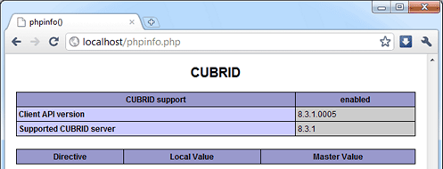
Configuring the environment
If you have received an error messages, follow the steps below; if you can see CUBRID in phpinfo(), you do not need to look further. By default, when you install CUBRID, it automatically adds its installation directory to the Path system environment variable. To verify the variable have been correctly configured, launch the command prompt ([Start] > [Programs] > [Accessories] > [Command Prompt]) and enter the following commands one by one.
Enter command below in the command prompt as follows.
php --versionYou can see the PHP version like below if it is properly configured.
PHP 5.6.30 (cli) (built: Jun 13 2017 16:16:30) or for version 7.1.x PHP 7.1.7 (cli) (built: Aug 3 2017 10:59:35) ( NTS ) C:\Users\Administrator>php --version PHP 5.6.30 (cli) (built: Jan 18 2017 19:47:28)Enter command as follows.
cubrid --versionYou can see the CUBRID version like below if it is properly configured.
C:\Users\Administrator>cubrid --version cubrid.exe (CUBRID utilities) CUBRID 9.3 (9.3.8.0003) (64bit release build for Windows_NT) (Apr 11 2017 11:54:08)
If you cannot get the result like above, it is highly likely that your PHP and CUBRID installations went wrong. Try to reinstall them and recheck again. If the path is not automatically specified even after you complete reinstallation, you can do it manually.
Right-click [My Computer] and select [Properties]. The [System Properties] dialog box will appear.
Go to [Advanced] tab and click on [Environment Variables].
Select the variable called Path in the [System variables] box and click [Edit] button. You will notice that the value of that variable contains system paths separated by semi-colon.
Add the paths for CUBRID and PHP in that variable. For example, if PHP is installed in C:\Program Files\PHP and also CUBRID in C:\CUBRID\bin, you will have to append (do not overwrite, just append) these values to the path like C:\CUBRID\bin;C:\Program Files\PHP.
Click [OK] to save and close the dialog box.
To confirm you have done everything correct, check the variable presence in the command prompt.
Downloading and Installing Compiled CUBRID PHP Driver
First, download CUBRID PHP/PDO driver of which versions match the versions of your operating system and PHP installed from https://www.cubrid.org/downloads#php .
After you download the driver, you will see the php_cubrid.dll file for CUBRID PHP driver or the php_pdo_cubrid.dll file for CUBRID PDO driver. Follow the steps below to install it.
Copy this driver to the default PHP extensions directory (usually located at C:\Program Files\PHP\ext).
Set your system environment. Check if the environment variable PHPRC is C:\Program Files\PHP and system variable path is added with %PHPRC% and %PHPRC\ext.
Edit php.ini (C:\Program Files\PHP\php.ini) and add the following two command lines at the end of the php.ini file.
[PHP_CUBRID] extension=php_cubrid.dllFor CUBRID PDO driver, add command lines below.
[PHP_PDO_CUBRID] extension = php_pdo_cubrid.dllRestart your web server to apply changes.
Building CUBRID PHP Driver from Source Code
For Linux
In this section, we will introduce the way of building CUBRID PHP driver for Linux.
Configuring the environment
CUBRID: Install CUBRID. Make sure the environment variable %CUBRID% is defined in your system.
PHP 5.6.x, 7.1.x or 7.4.x source code: You can download PHP source code from https://www.php.net/downloads.php .
Apache 2: It can be used to test PHP.
CUBRID PHP driver source code: You can download the source code from https://www.cubrid.org/downloads#php . Make sure that the version you download is the same as the version of CUBRID which has been installed on your system.
IF building CCI driver In Linux Or Mac, GNU Developer Toolset 8 or higher is required.
Compiling CUBRID PHP driver
Download the CUBRID PHP driver, extract it, and enter the directory.
$> tar zxvf php-<version>.tar.gz (or tar jxvf php-<version>.tar.bz2) $> cd php-<version>/extRun phpize. For more information about getting phpize, see Remark.
cubrid-php> /usr/bin/phpizeConfigure the project. It is recommended to execute ./configure -h so that you can check the configuration options (we assume that Apache 2 has been installed in /usr/local).
cubrid-php>./configure --with-cubrid --with-php-config=/usr/local/bin/php-config--with-cubrid=shared: Includes CUBRID support.
--with-php-config=PATH: Enters an absolute path of php-config including the file name.
Build the project. If it is successfully compiled, the cubrid.so file will be created in the /modules directory.
Copy the cubrid.so to the /usr/local/php/lib/php/extensions directory; the /usr/local/php is a PHP root directory.
cubrid-php> mkdir /usr/local/php/lib/php/extensions cubrid-php> cp modules/cubrid.so /usr/local/php/lib/php/extensionsIn the php.ini file, set the extension_dir variable and add the CUBRID PHP driver to the extension variable as shown below.
extension_dir = "/usr/local/php/lib/php/extension/no-debug-zts-xxx" extension = cubrid.so
Testing CUBRID PHP driver installation
Create a test.php file as follows:
<?php phpinfo(); ?>Use web browser to visit http://localhost/test.php. If you can see the following result, it means that installation is successfully completed.
CUBRID
Value
Version
10.1.0.XXXX
Remark
phpize is a shell script to prepare the PHP extension for compiling. You can get it when you install PHP because it is automatically installed with PHP installation, in general. If it you do not have phpize installed on your system, you can get it by following the steps below.
Download the PHP source code. Make sure that the PHP version works with the PHP extension that you want to use. Extract PHP source code and enter its root directory.
$> tar zxvf php-<version>.tar.gz (or tar jxvf php-<version>.tar.bz2) $> cd php-<version>Configure the project, build, and install it. You can specify the directory you want install PHP by using the option, --prefix.
php-root> ./configure --prefix=prefix_dir; make; make installYou can find phpize in the prefix_dir/bin directory.
For Windows
In this section, we will introduce three ways of building CUBRID PHP driver for Windows. If you have no idea which version you choose, read the following contents first.
If you are using PHP as module with Apache builds from apache.org (not recommended) you need to use the older VC6 versions of PHP compiled with the legacy Visual Studio 6 compiler. Do NOT use VC11+ versions of PHP with the apache.org binaries.
With Apache you have to use the Thread Safe (TS) versions of PHP.
If you are using PHP version 5.5.x or later, you should use the VC11 versions (Visual Studio 2012)
If you are using PHP version 7.1.x or later, you should use the VC14 versions (Visual Studio 2015)
VC11 and VC14 versions are compiled with the Visual Studio 2012 and 2015 compiler respectively. The VC11 or VC14 versions have more improvements in performance and stability.
More recent versions of PHP are built with VC11, VC14 (Visual Studio 2012 or 2015 compiler respectively) and include improvements in performance and stability.
The VC11 builds require to have the Visual C++ Redistributable for Visual Studio 2012 x86 or x64 installed
The VC14 builds require to have the Visual C++ Redistributable for Visual Studio 2015 x86 or x64 installed
Building CUBRID PHP Driver with VC11 for PHP 5.6.x
Configuring the environment
CUBRID: Install CUBRID. Make sure the environment variable %CUBRID% is defined in your system.
Visual Studio 2012: You can alternately use the free Visual C++ Express Edition or the Visual C++ 11 compiler included in the Windows SDK if you are familiar with a makefile. Make sure that you have the Microsoft Visual C++ Redistributable Package installed on your system to use CUBRID PHP VC11 driver.
PHP 5.6.x binaries: You can install VC11 x86 Non Thread Safe or VC11 x86 Thread Safe. Make sure that the %PHPRC% system environment variable is correctly set. In the [Property Pages] dialog box, select [General] under the [Linker] tree node. You can see $(PHPRC) in [Additional Library Directories].

PHP 5.6.x source code: Remember to get the source code that matches your binary version. After you extract the PHP 5.6.x source code, add the %PHP5_SRC% system environment variable and set its value to the path of PHP 5.6.x source code. In the [Property Pages] dialog box, select [General] under the [C/C++] tree node. You can see $(PHP5_SRC) in [Additional Include Directories].

CUBRID PHP driver source code: You can download CUBRID PHP driver source code of which the version is the same as the version of CUBRID that have been installed on your system. You can get it from https://www.cubrid.org/downloads#php .
Note
You do not need to build PHP 5.6.x from source code but configuring a project is required. If you do not make configuration settings, you will get the message that a header file (config.w32.h) cannot be found. Read https://wiki.php.net/internals/windows/stepbystepbuild to get more detailed information.
Building CUBRID PHP driver
Open the php_cubrid.vcproj file under the \win directory. In the [Solution Explorer] pane, right-click on the php_cubrid (project name) and select [Properties].
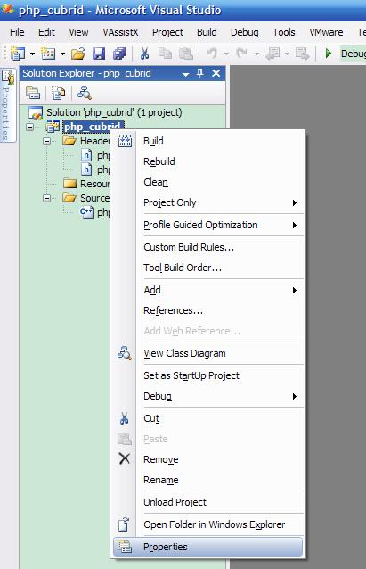
In the [Property Page] dialog box, click the [Configuration Manager] button. Select one of four values among Release_TS, Release_NTS, Debug_TS, and Debug_NTS in [Configuration] of [Project contexts] and click the [Close] button.
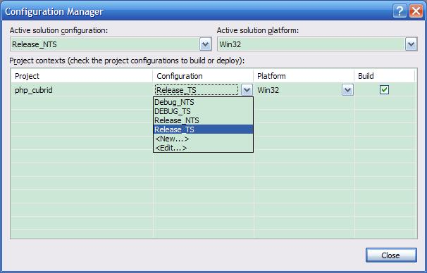
After you complete the properties modification, click the [OK] button and press the <F7> key to compile the driver. Then, we have the php_cubrid.dll file built.
You need to make PHP recognize the php_cubrid.dll file as an extension. To do this:
Create a new folder named cubrid where PHP has been installed and copy the php_cubrid.dll file to the cubrid folder. You can also put the php_cubrid.dll file in %PHPRC%\ext if this directory exists.
In the php.ini file, enter the path of the php_cubrid.dll file as an extension_dir variable value and enter php_cubrid.dll as an extension value.
Building CUBRID PHP Driver with VC14 for PHP 7.1.x
Configuring the environment
CUBRID: Install CUBRID. Make sure that the environment variable %CUBRID% is defined in your system.
Visual Studio 2015: You can alternately use the free Visual C++ Express Edition or the Visual C++ 14 compiler included in the Windows SDK if you are familiar with a makefile. Make sure that you have the Microsoft Visual C++ Redistributable Package installed on your system to use CUBRID PHP VC14 driver.
PHP 7.1.x binaries: You can install VC14 x86 Non Thread Safe or VC14 x86 Thread Safe. Make sure that the value of the %PHPRC% system environment variable is correctly set. In the [Project Settings] dialog box, you can find $(PHPRC) in [Additional library path] of the [Link] tab.
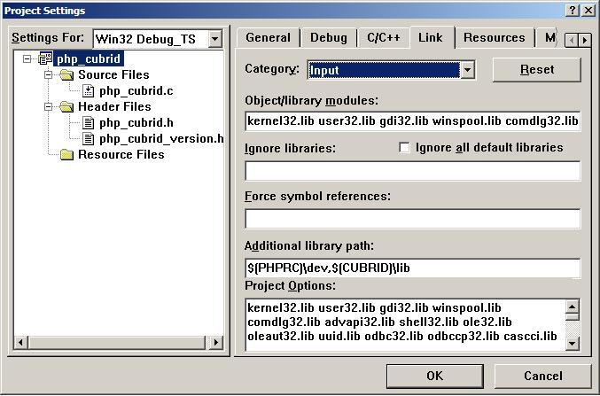
PHP 7.1.x source code: Remember to get the source that matches your binary version. After you extract the PHP 7.1.x source code, add the %PHP7_SRC% system environment variable and set its value to the path of PHP 7.1.x source code. In the [Project Settings] dialog box of VC11 project, you can find $(PHP7_SRC) in [Additional include directories] of the [C/C++] tab.
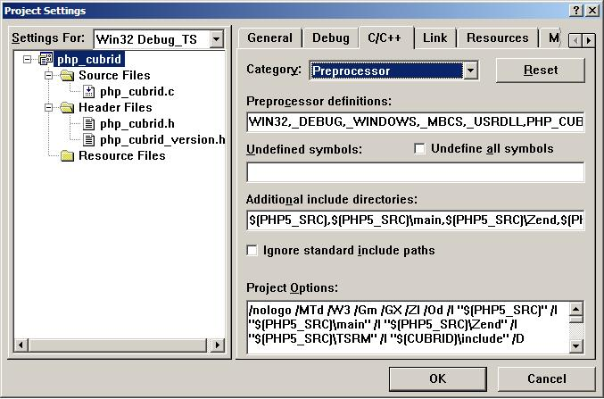
CUBRID PHP driver source code: You can download CUBRID PHP driver source code of which the version is the same as the version of CUBRID that has been installed on your system. You can get it from https://www.cubrid.org/downloads#php .
Note
If you build CUBRID PHP driver with PHP 7.1.x source code, you need to make some configuration settings for PHP 7.1.x on Windows. If you do not make these settings, you will get the message that a header file (config.w32.h) cannot be found. Read https://wiki.php.net/internals/windows/stepbystepbuild to get more detailed information.
Building CUBRID PHP driver
Open the project in the [Build] menu and then select [Set Active Configuration].
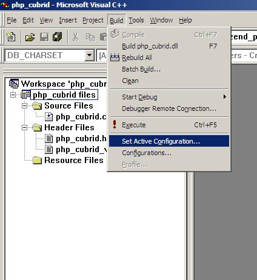
There are four types of configuration settings (Win32 Release_TS, Win32 Release, Win32 Debug_TS, and Win32 Debug). Select one of them depending on your system and then click the [OK] button.
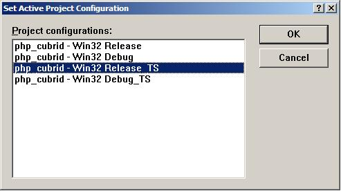
After you complete the properties modification, click the [OK] button and press the <F7> key to compile the driver. Then you have the php_cubrid.dll file built.
You need to make PHP recognize the php_cubrid.dll file as an extension. To do this:
Create a new folder named cubrid where PHP is installed and copy php_cubrid.dll to the cubrid folder. You can also put php_cubrid.dll in %PHPRC%\ext if this directory exists.
Set the extension_dir variable and add CUBRID PHP driver to extension variable in the php.ini file.
Building CUBRID PHP Driver for 64-bit Windows
PHP for 64-bit Windows
PHP 5.6.x binaries: You can install VC11 x64 Non Thread Safe or VC11 x64 Thread Safe. Make sure that the %PHPRC% system environment variable is correctly set. In the [Property Pages] dialog box, select [General] under the [Linker] tree node. You can see $(PHPRC) in [Additional Library Directories].
PHP 5.6.x source code: Remember to get the source code that matches your binary version. After you extract the PHP 5.6.x source code, add the %PHP5_SRC% system environment variable and set its value to the path of PHP 5.6.x source code. In the [Property Pages] dialog box, select [General] under the [C/C++] tree node. You can see $(PHP5_SRC) in [Additional Include Directories].
PHP 7.1.x binaries: You can install VC14 x64 Non Thread Safe or VC14 x64 Thread Safe. Make sure that the %PHPRC% system environment variable is correctly set. In the [Property Pages] dialog box, select [General] under the [Linker] tree node. You can see $(PHPRC) in [Additional Library Directories].
PHP 7.1.x source code: Remember to get the source code that matches your binary version. After you extract the PHP 7.1.x source code, add the %PHP7_SRC% system environment variable and set its value to the path of PHP 7.1.x source code. In the [Property Pages] dialog box, select [General] under the [C/C++] tree node. You can see $(PHP7_SRC) in [Additional Include Directories].
You can find the supported compilers to build PHP on Windows at https://wiki.php.net/internals/windows/compiler . You can see that both Visual C++ 11 (2012) and Visual C++ 14 (2015) can be used to build 64-bit PHP.
Apache for 64-bit Windows
Apache Lounge has provided up-to-date Windows binaries including 64bit version. You can download the latest apache 2.2.34 64bit version on the following link.
Configuring the environment
CUBRID for 64-bit Windows: You can install the latest version of CUBRID for 64-bit Windows. Make sure the environment variable %CUBRID% is defined in your system.
Visual Studio 2012 or 2015: You can alternately use the free Visual C++ Express Edition or the Visual C++ compiler in the Windows SDK if you are familiar with a makefile.
PHP 5.6.x or 7.1.x binaries for 64-bit Windows: You can build your own VC11 or VC14 x64 PHP. Both x64 Non Thread Safe and x64 Thread Safe are available. After you have installed it, check if the value of system environment variable %PHPRC% is correctly set.
PHP 5.6.x source: Remember to get the src package that matches your binary version. After you extract the PHP 5.6.x src, add system environment variable %PHP5_SRC% and set its value to the path of PHP 5.6.x source code. In the VC11 [Property Pages] dialog box, select [General] under the [C/C++] tree node. You can see $(PHP5_SRC) in [Additional Include Directories].
PHP 7.1.x source: Remember to get the src package that matches your binary version. After you extract the PHP 7.1.x src, add system environment variable %PHP7_SRC% and set its value to the path of PHP 7.1.s source code. In the VC14 [Property Pages] dialog box, select [General] under the [C/C++] tree node. You can see $(PHP7_SRC) in [Additional Include Directories].
CUBRID PHP driver source code: You can download CUBRID PHP driver source code of which the version is the same as the version of CUBRID that is installed on your system. You can get it from https://www.cubrid.org/downloads#php .
Note
You do not need to build PHP 5.6.x or 7.1.x from source code; however, configuring a project is required. If you do not make configuration settings, you will get the message that a header file (config.w32.h) cannot be found. Read https://wiki.php.net/internals/windows/stepbystepbuild to get more detailed information.
Configuring PHP 5.6.x or 7.1.x
After you have installed SDK 6.1 or 8.1 later, click the [CMD Shell] shortcut under the [Microsoft Windows SDK v.x] folder (Windows Start menu).
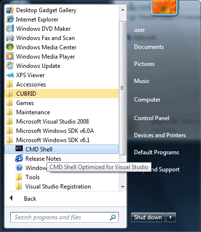
Run setenv /x64 /release.
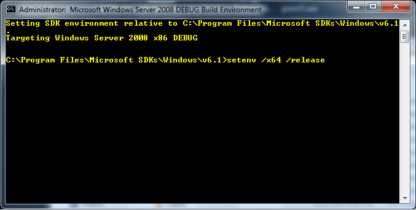
Enter PHP 5.6.x or 7.1.x source code directory in the command prompt and run buildconf to generate the configure.js file.
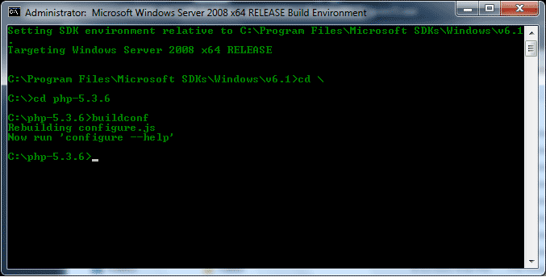
Or you can also double-click the buildconf.bat file.
Run the configure command to configure the PHP project.
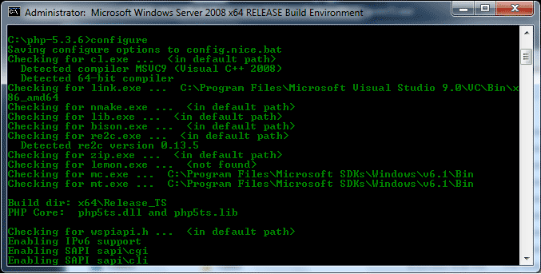
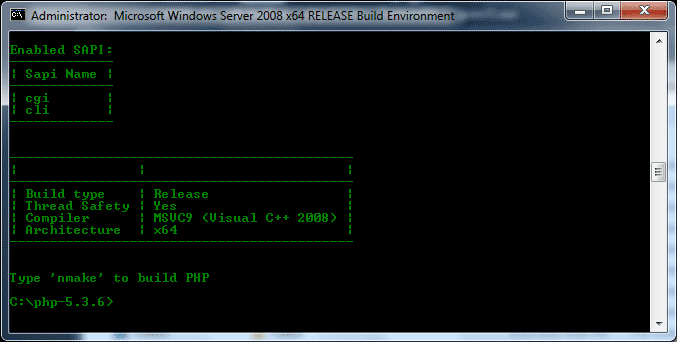
Building CUBRID PHP dirver
Open the php_cubrid.vcproj file under the \win directory. In the [Solution Explorer] on the left, right-click on the php_cubrid project name and select [Properties].
On the top right corner of the [Property Pages] dialog box, click [Configuration Manager].
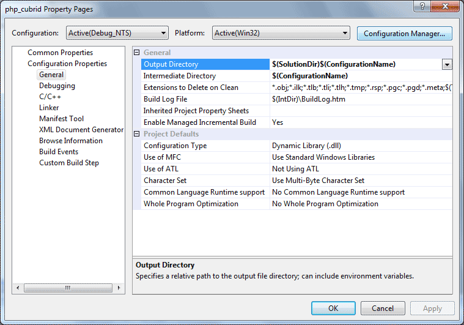
In the [Configuration Manager] dialog box, you can see four types of configurations (Release_TS, Release_NTS, Debug_TS, and Debug_NTS) in the [Active solution configuration] dropdown list. Select New in the dropdown list so that you can create a new one for your x64 build.
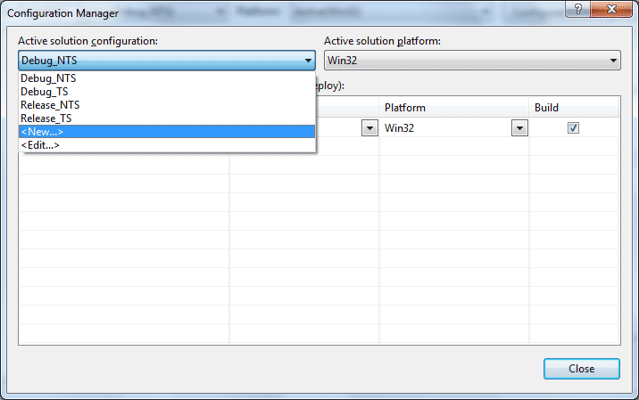
In the [New Solution Configuration] dialog box, enter a value in the Name box (e.g., Release_TS_x64). In the [Copy settings from] dropdown list, select the corresponding x86 configuration and click [OK].
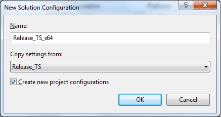
In the [Configuration Manager] dialog box, select the value x64 in the [Platform] dropdown list. If it does not exist, select New.
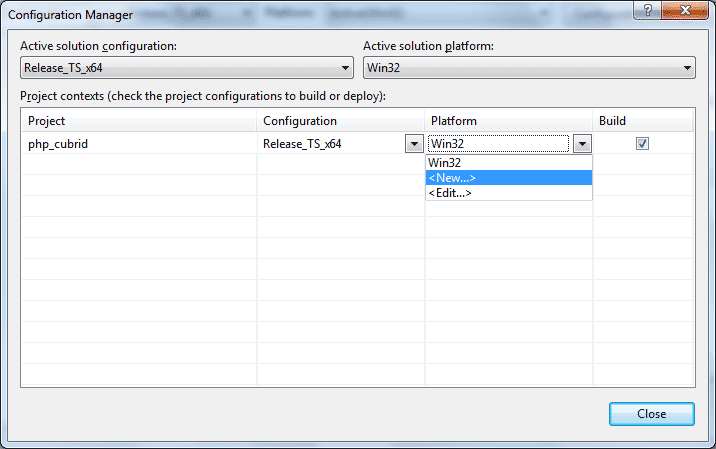
In the [New Project Platform] dialog box, select x64 option in the [New platform] dropdown list.
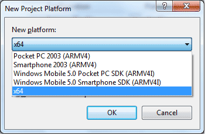
In the [Property Pages] dialog box, select [Preprocessor] under the [C/C++] tree node. In [Preprocessor Definitions], delete _USE_32BIT_TIME_T and click [OK] to close the dialog box.
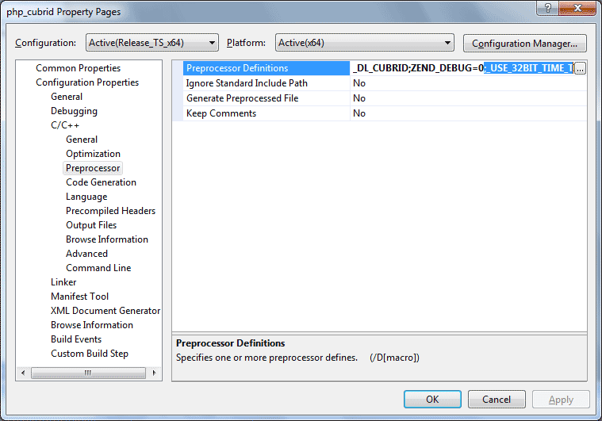
Press the <F7> key to compile. Now you will get the CUBRID PHP driver for 64-bit Windows.
PHP Programming
Connecting to a Database
The first step of database applications is to use cubrid_connect () or cubrid_connect_with_url () function which provides database connection. Once cubrid_connect () or cubrid_connect_with_url () function is executed successfully, you can use any functions available in the database. It is very important to call the cubrid_disconnect () function before applications are terminated. The cubrid_disconnect () function terminates the current transaction as well as the connection handle and all request handles created by the cubrid_connect () function.
Note
The database connection in thread-based programming must be used independently each other.
In autocommit mode, the transaction is not committed if all results are not fetched after running the SELECT statement. Therefore, although in autocommit mode, you should end the transaction by executing COMMIT or ROLLBACK if some error occurs during fetching for the resultset.
Transactions and Auto-Commit
CUBRID PHP supports transaction and auto-commit mode. Auto-commit mode means that every query that you run has its own implicit transaction. You can use the cubrid_get_autocommit () function to get the status of current connection auto-commit mode and use the cubrid_set_autocommit () function to enable/disable auto-commit mode of current connection. In auto-commit mode, any transactions being executed are committed regardless of whether it is set to ON or OFF.
The default value of auto-commit mode upon application startup is configured by the CCI_DEFAULT_AUTOCOMMIT (broker parameter). If the broker parameter value is not configured, the default value is set to ON.
If you set auto-commit mode to OFF in the cubrid_set_autocommit () function, you can handle transactions by specifying a proper function; to commit transactions, use the cubrid_commit () function and to roll back transactions, use the cubrid_rollback () function. If you use the cubrid_disconnect () function, transactions will be disconnected and jobs which have not been committed will be rolled back.
Processing Queries
Executing queries
The following are the basic steps to execute queries.
Creating a connection handle
Creating a request handle for an SQL query request
Fetching result
Disconnecting the request handle
$con = cubrid_connect("192.168.0.10", 33000, "demodb");
if($con) {
$req = cubrid_execute($con, "select * from code");
if($req) {
while ($row = cubrid_fetch($req)) {
echo $row["s_name"];
echo $row["f_name"];
}
cubrid_close_request($req);
}
cubrid_disconnect($con);
}
Column types and names of the query result
The cubrid_column_types () function is used to get arrays containing column types and the cubrid_column_types () functions is used to get arrays containing colunm names.
$req = cubrid_execute($con, "select host_year, host_city from olympic");
if($req) {
$col_types = cubrid_column_types($req);
$col_names = cubrid_column_names($req);
while (list($key, $col_type) = each($col_types)) {
echo $col_type;
}
while (list($key, $col_name) = each($col_names))
echo $col_name;
}
cubrid_close_request($req);
}
Controlling a cursor
The cubrid_move_cursor () function is used to move a cursor to a specified position from one of three points: beginning of the query result, current cursor position, or end of the query result).
$req = cubrid_execute($con, "select host_year, host_city from olympic order by host_year");
if($req) {
cubrid_move_cursor($req, 20, CUBRID_CURSOR_CURRENT)
while ($row = cubrid_fetch($req, CUBRID_ASSOC)) {
echo $row["host_year"]." ";
echo $row["host_city"]."\n";
}
}
Result array types
One of the following three types of arrays is used in the result of the cubrid_fetch () function. The array types can be determined when the cubrid_fetch () function is called. Of array types, the associative array uses string indexes and the numeric array uses number indexes. The last array includes both associative and numeric arrays.
Numeric array
while (list($id, $name) = cubrid_fetch($req, CUBRID_NUM)) { echo $id; echo $name; }Associative array
while ($row = cubrid_fetch($req, CUBRID_ASSOC)) { echo $row["id"]; echo $row["name"]; }
Catalog Operations
The cubrid_schema () function is used to get database schema information such as classes, virtual classes, attributes, methods, triggers, and constraints. The return value of the cubrid_schema () function is a two-dimensional array.
$pk = cubrid_schema($con, CUBRID_SCH_PRIMARY_KEY, "game");
if ($pk) {
print_r($pk);
}
$fk = cubrid_schema($con, CUBRID_SCH_IMPORTED_KEYS, "game");
if ($fk) {
print_r($fk);
}
Error Handling
When an error occurs, most of PHP interfaces display error messages and return false or -1. The cubrid_error_msg (), cubrid_error_code () and cubrid_error_code_facility () functions are used to check error messages, error codes, and error facility codes.
The return value of the cubrid_error_code_facility () function is one of the following (CUBRID_FACILITY_DBMS (DBMS error), CUBRID_FACILITY_CAS (CAS server error), CUBRID_FACILITY_CCI (CCI error), or CUBRID_FACILITY_CLIENT (PHP module error).
Using OIDs
The OID value in the currently updated f record by using the cubrid_current_oid function if it is used together with query that can update the CUBRID_INCLUDE_OID option in the cubrid_execute () function.
$req = cubrid_execute($con, "select * from person where id = 1", CUBRID_INCLUDE_OID);
if ($req) {
while ($row = cubrid_fetch($req)) {
echo cubrid_current_oid($req);
echo $row["id"];
echo $row["name"];
}
cubrid_close_request($req);
}
Values in every attribute, specified attributes, or a single attribute of an instance can be obtained by using OIDs.
If any attributes are not specified in the cubrid_get () function, values in every attribute are returned (a). If attributes is specified in the array data type, the array containing the specified attribute value is returned in the associative array (b). If a single attribute it is specified in the string type, a value of the attributed is returned (c).
$attrarray = cubrid_get ($con, $oid); // (a)
$attrarray = cubrid_get ($con, $oid, array("id", "name")); // (b)
$attrarray = cubrid_get ($con, $oid, "id"); // (c)
The attribute values of an instance can be updated by using OIDs. To update a single attribute value, specify attribute name and value in the string type (a). To update multiple attribute values, specify attribute names and values in the associative array (b).
$cubrid_put ($con, $oid, "id", 1); // (a)
$cubrid_put ($con, $oid, array("id"=>1, "name"=>"Tomas")); // (b)
Using Collections
You can use the collection data types through PHP array data types or functions that support array data types. The following example shows how to fetch query result by using the cubrid_fetch () function.
$row = cubrid_fetch ($req);
$col = $row["customer"];
while (list ($key, $cust) = each ($col)) {
echo $cust;
}
You can get values of collection attributes. The example shows how to get values of collection attributes by using the cubrid_col_get () function.
$tels = cubrid_col_get ($con, $oid, "tels");
while (list ($key, $tel) = each ($tels)) {
echo $tel."\n";
}
You can directly update values of collection types by using cubrid_set_add() or cubrid_set_drop() function.
$tels = cubrid_col_get ($con, $oid, "tels");
while (list ($key, $tel) = each ($tels)) {
$res = cubrid_set_drop ($con, $oid, "tel", $tel);
}
cubrid_commit ($con);
Note
If a string longer than defined max length is inserted (INSERT) or updated (UPDATE), the string will be truncated.